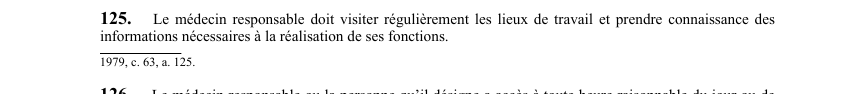

art-125-LSST : visites lieux travail médecin
Un article du wiki ⚖️ Recueil législatif
🌐 LegisQuébec · 📄 PDF officiel (page 35)
Texte officiel : capture du PDF

🔗 Ouvrir a cette page : LSST.pdf : page 35 · texte a jour au 26 mars 2024
En bref
Le médecin responsable doit visiter régulièrement les lieux de travail et prendre connaissance des informations nécessaires à la réalisation de ses fonctions. Il s'agit d'une obligation.
Voir aussi
- art. 123 : signalement déficiences médecin responsable · obligation : tout en respectant la confidentialité, le médecin responsable doit signaler à la Commission, à l'employeur, aux travailleurs, à l'association accréditée, au comité et au directeur de santé publique toute déficience susceptible de nécessiter une mesure de prévention.
- art. 124 : information travailleur par médecin · le médecin responsable informe le travailleur de toute situation l'exposant à un danger pour sa santé, sa sécurité ou son intégrité physique ou psychique, ainsi que de toute altération à sa santé.
- art. 126 : droit d'accès du médecin responsable · définition : le médecin responsable ou la personne qu'il désigne a accès à toute heure raisonnable à un lieu de travail, peut se faire accompagner d'un expert, accède à toutes les informations nécessaires incluant les registres, et peut utiliser un appareil de mesure.
- art. 127 : responsabilités directeur santé publique · obligation : le directeur de santé publique est responsable de la mise en application du contrat sur son territoire; il doit notamment voir à l'application des programmes, coordonner les ressources, colliger les données sur la santé des travailleurs.
- ↑ Loi : LSST
Pages qui pointent ici (6)
- art-123-LSST, pouvoirs CNESST Recueil législatif
- art-124-LSST, réclamation préventive Recueil législatif
- art-126-LSST, formation Recueil législatif
- art-127-LSST, directeur santé publique responsable Recueil législatif
- LSST - Chapitre VII - Inspecteur de la CNESST et révision Recueil législatif
- LSST (programmes et inspection) Droit du travail